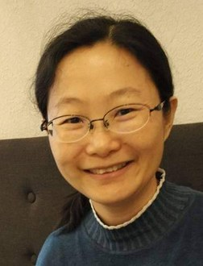

OUR TEAM
醫療團隊
院長・精神科專科醫師
吳佳憬 醫師
學歷
- 台北醫學大學 醫學系
- 台北醫學大學 醫學人文研究所
經歷
- 台北市立療養院 住院醫師
- 台北市立聯合醫院松德院區 總醫師
- 淡水長青醫院 主治醫師
- 行政院衛生署竹東醫院 主治醫師
- 臺大醫院竹東分院 主治醫師

主愛心理諮商室・諮商心理師
劉姮戀 心理師
「陪你一起走過心裡的路」
學歷
- 國立臺灣師範大學 教育心理與輔導學系碩士
- 主愛心靈診所 諮商心理師
- 福樂心理治療所 諮商心理師
諮心字第 003453 號
專長
- 原生家庭議題了解成長背景、改善與家人關係
- 基督信仰面對信仰疑惑、探索生命意義
- 創傷與悲傷失落陪伴走過失親、重大打擊
- 憂鬱、人際與情緒協助調整情緒、改善人際互動
- 夢境探索從夢境看見內在需要